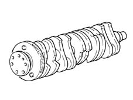

DESCRIPTION OF COMPONENTS
- Path
- Descriptions > 10 ENGINE > 1024 CRANKSHAFT AND FLYWHEEL > 1024A CRANKSHAFT > DESCRIPTION OF COMPONENTS
- Kind
- system description
- Applies to
- engines: 2.0 TB; all production periods
- Interactive page
- https://sloeber94.github.io/elrnDB-lThss/en/#/617318
Applies to: engines: 2.0 TB; all production periods
CRANKSHAFT
Specifications
Type
Forged in high-strength alloy steel, with induction hardened pins and rolled grooves.
Resting on six main bearings with interposed half-bearings divided into three size categories.
Crankshaft axial clearance is adjusted by two half-rings housed on the third main bearing.
Ten counterweights balance the crankshaft rotary masses with precision.
A channel running along the length of the crankshaft lubricates the main journals and crankpins.
A phonic wheel is fitted at the rear for the rpm sensor.
